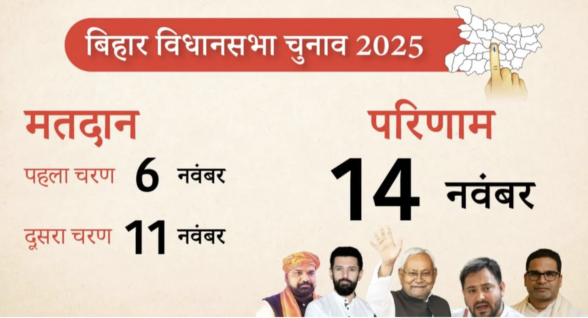

बिहार विधानसभा चुनाव 2025: तारीखों का ऐलान, 2 चरणों में होगा मतदान! 🗳️
Published on October 6, 2025 | By Daily_Update
मुख्य निर्वाचन आयुक्त **ज्ञानेश कुमार** ने **बिहार विधानसभा चुनाव 2025** की तारीखों की घोषणा कर दी है। राज्य की कुल **243 सीटों** पर होने वाले चुनाव को इस बार ऐतिहासिक रूप से सिर्फ **दो चरणों** में संपन्न करने का फैसला लिया गया है। **6 नवंबर** और **11 नवंबर** को वोटिंग होगी, जबकि नतीजे **14 नवंबर** को आएंगे। जानें आपके जिले में कब होगी वोटिंग!
निर्वाचन आयोग ने आज शाम 4 बजे प्रेस कॉन्फ्रेंस में 2025 बिहार विधानसभा चुनाव का पूरा शेड्यूल घोषित कर दिया है। मुख्य निर्वाचन आयुक्त **ज्ञानेश कुमार** ने बताया कि कुल 243 सीटों पर होने वाले इस चुनाव को सिर्फ दो चरणों में संपन्न करने का फैसला लिया गया है, जो राज्य के इतिहास में पहली बार होगा।
चुनाव की महत्वपूर्ण तिथियां (Important Dates)
| विवरण | तारीख |
|---|---|
| **पहले चरण का मतदान** (121 सीटें) | **6 नवंबर** |
| **दूसरे चरण का मतदान** (122 सीटें) | **11 नवंबर** |
| **मतगणना (रिजल्ट)** | **14 नवंबर** |
चरण-वार मतदान की विस्तृत जानकारी (Phase-wise Polling Details)
✅ पहला चरण: 6 नवंबर (121 सीटें)
इस चरण में पटना, नालंदा, मुजफ्फरपुर, दरभंगा, सारण, समस्तीपुर समेत 18 जिलों की 121 सीटों पर वोटिंग होगी।
| जिले का नाम | विधानसभा सीटें (संख्या) | मुख्य सीटें (उदाहरण) |
|---|---|---|
| **पटना** | 14 | मसौढ़ी, पालीगंज, फुलवारीशरीफ, दीघा, पटना साहिब |
| **नालंदा** | 7 | हरनौत, इस्लामपुर, हिलसा, राजगीर, बिहारशरीफ |
| **भोजपुर** | 7 | आरा, अगिआंव, शाहपुर, जगदीशपुर |
| **बक्सर** | 4 | बक्सर, डुमरांव, राजपुर, ब्रह्मपुर |
| **शेखपुरा** | 2 | बरबीघा, शेखपुरा |
| **लखीसराय** | 2 | लखीसराय, सूर्यगढ़ा |
| **बेगूसराय** | 8 | चेरिया बरियारपुर, बखरी, बेगूसराय, बछवाड़ा |
| **खगड़िया** | 4 | परबत्ता, बेलदौर, खगड़िया |
| **मुंगेर** | 4 | जमालपुर, मुंगेर, तारापुर |
| **मुजफ्फरपुर** | 11 | गायघाट, औराई, मीनापुर, मुजफ्फरपुर, कांटी, पारू |
| **दरभंगा** | 9 | गौरा बौराम, बेनीपुर, दरभंगा, हायाघाट, जाले |
| **सहरसा** | 4 | सिमरी बख्तियारपुर, सोनबरसा, महिषी, सहरसा |
| **मधेपुरा** | 4 | आलमनगर (SC), बिहारीगंज, मधेपुरा |
| **सीवान** | 8 | सीवान, जीरादेई, रघुनाथपुर, महाराजगंज |
| **गोपालगंज** | 6 | बैकुंठपुर, भोरे, हथुआ, गोपालगंज |
| **सारण** | 10 | तरैया, सोनपुर, छपरा, गरखा, मांझी |
| **वैशाली** | 8 | महुआ, लालगंज, हाजीपुर, राघोपुर, महनार |
| **समस्तीपुर** | 10 | कल्याणपुर, रोसड़ा (SC), समस्तीपुर, मोरवा, हसनपुर |
✅ दूसरा चरण: 11 नवंबर (122 सीटें)
इस चरण में गया, रोहतास, औरंगाबाद, भागलपुर, मधुबनी, पूर्वी चंपारण समेत 20 जिलों की 122 सीटों पर मतदान होगा।
| जिले का नाम | विधानसभा सीटें (संख्या) | मुख्य सीटें (उदाहरण) |
|---|---|---|
| **गया** | 10 | गया टाउन, बोधगया, टिकारी, शेरघाटी, इमामगंज |
| **कैमूर** | 4 | चैनपुर, मोहनिया, भभुआ, रामगढ़ |
| **रोहतास** | 7 | नोखा, डेहरी, सासाराम, चेनारी, दिनारा |
| **औरंगाबाद** | 6 | गोह, ओबरा, नवीनगर, औरंगाबाद, रफीगंज |
| **अरवल** | 2 | अरवल, कुर्था |
| **जहानाबाद** | 3 | जहानाबाद, मखदूमपुर (SC), घोसी |
| **नवादा** | 5 | हिसुआ, नवादा, वारसलीगंज, रजौली (SC) |
| **भागलपुर** | 7 | बिहपुर, भागलपुर, सुल्तानगंज, कहलगांव, नाथनगर |
| **बांका** | 4 | धोरैया, बांका, कटोरिया, बेलहर |
| **जमुई** | 4 | सिकंदरा, जमुई, झाझा, चकाई |
| **सीतामढ़ी** | 8 | बथनाहा, परिहार, सीतामढ़ी, रुन्नीसैदपुर |
| **शिवहर** | 1 | शिवहर |
| **मधुबनी** | 9 | खजौली, झंझारपुर, जयनगर, बिस्फी, मधुबनी |
| **सुपौल** | 5 | त्रिवेणीगंज, छातापुर, निर्मली, सुपौल, पिपरा |
| **पूर्णिया** | 6 | अमौर, कसबा, बनमनखी, धमदाहा, पूर्णिया |
| **अररिया** | 6 | नरपतगंज, रानीगंज, फारबिसगंज, अररिया, सिकटी |
| **कटिहार** | 7 | बरारी, कटिहार, कदवा, बलरामपुर, मनिहारी |
| **किशनगंज** | 4 | ठाकुरगंज, किशनगंज, बहादुरगंज |
| **पूर्वी चंपारण** | 12 | रक्सौल, मोतिहारी, हरसिद्धि, चिरैया, ढाका |
| **पश्चिमी चंपारण** | 9 | वाल्मीकिनगर, बगहा, नरकटियागंज, बेतिया, सिकटा |
चुनाव आयोग की मुख्य पहल और सुधार (Key Initiatives by Election Commission)
मुख्य निर्वाचन आयुक्त ज्ञानेश कुमार ने इस बार के चुनाव में **17 महत्वपूर्ण पहल** की घोषणा की है, जिनमें से प्रमुख नीचे दी गई हैं:
- 👉 **कम मतदाता, अधिक पोलिंग स्टेशन:** अब हर बूथ पर **1200 से अधिक मतदाता नहीं** होंगे, जिससे पोलिंग स्टेशन की संख्या बढ़ेगी और कतारें छोटी होंगी।
- 👉 **100% वेबकास्टिंग:** हर पोलिंग स्टेशन पर **पूरी प्रक्रिया की वेबकास्टिंग** की जाएगी, जिससे चुनाव में पारदर्शिता सुनिश्चित होगी।
- 👉 **ईवीएम पर रंगीन फोटो:** उम्मीदवारों की पहचान आसान बनाने के लिए, ईवीएम पर उनके **कलर फोटोग्राफ** होंगे।
- 👉 **मोबाइल जमा करना अनिवार्य:** मतदान केंद्र पर पहुंचने पर सभी मतदाताओं को अपना **मोबाइल जमा करना होगा**, ताकि गोपनीयता बनी रहे।
- 👉 **पोस्टल बैलेट की गिनती:** पोस्टल बैलेट की गिनती ईवीएम की **सेकेंड लास्ट राउंड** की मतगणना शुरू होने से पहले खत्म कर दी जाएगी।
- 👉 **VVPAT की गिनती अनिवार्य:** फॉर्म 17C और ईवीएम डाटा में मिसमैच होने पर **VVPAT की काउंटिंग अनिवार्य** होगी।
- 👉 **कुल मतदाता:** बिहार में मतदाताओं की कुल संख्या **7.43 करोड़** है, जिसमें **14 लाख फर्स्ट टाइम वोटर्स** हैं।
CEC ज्ञानेश कुमार ने सभी BLO (बूथ लेवल ऑफिसर) को बधाई दी और मतदाताओं से इस लोकतंत्र के महापर्व में बढ़-चढ़कर हिस्सा लेने की अपील की है।
इस लेख को शेयर करें: